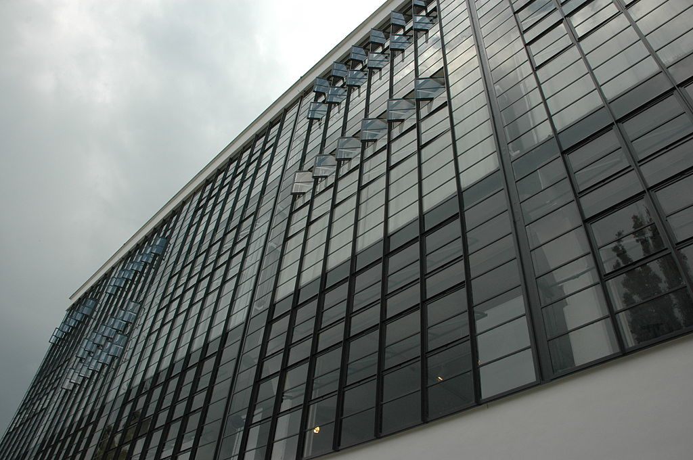
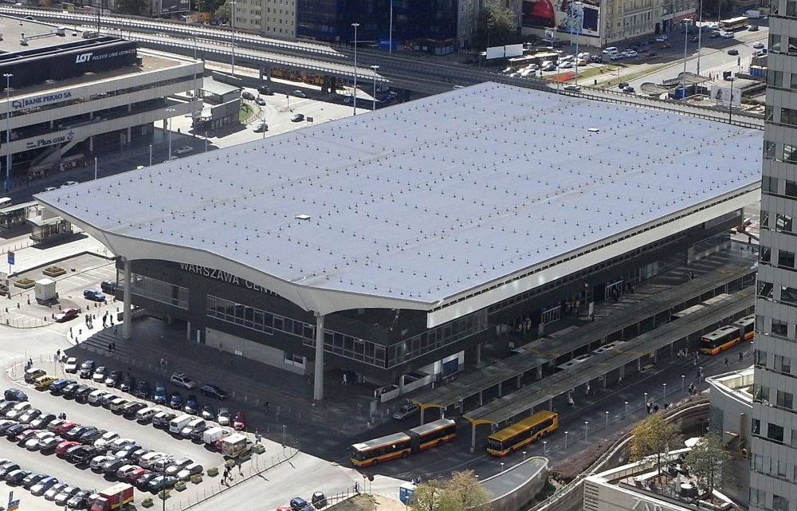
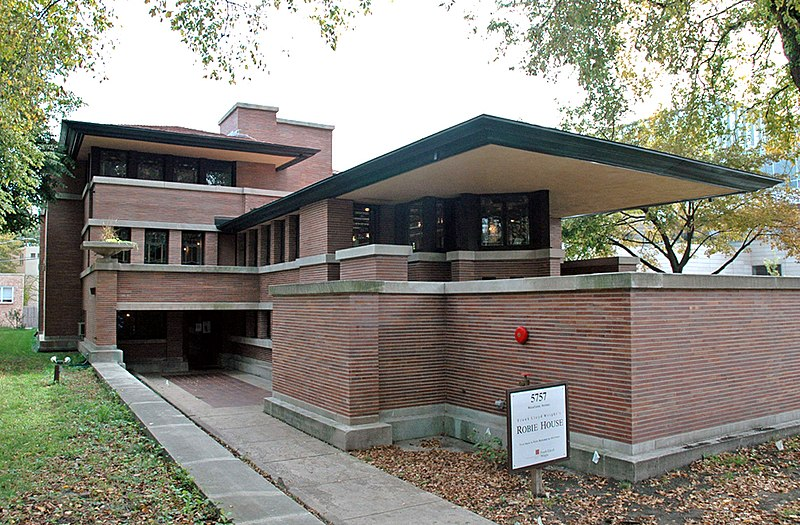
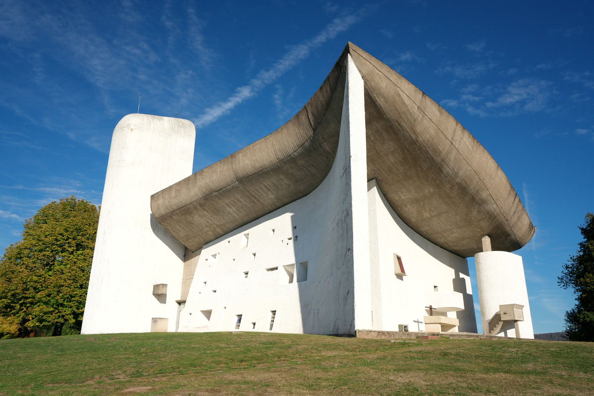
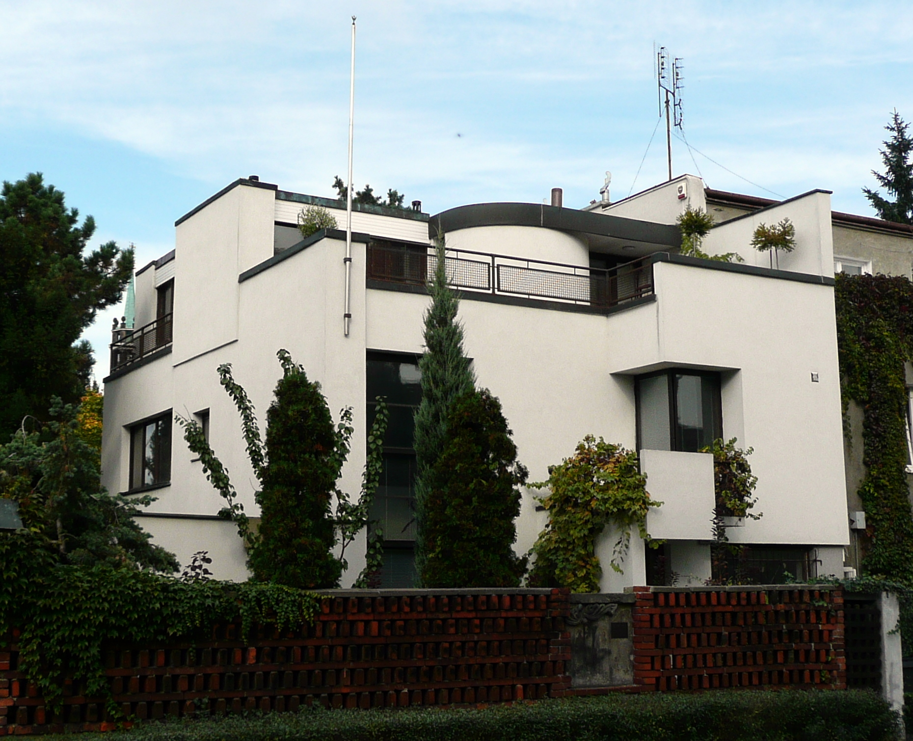
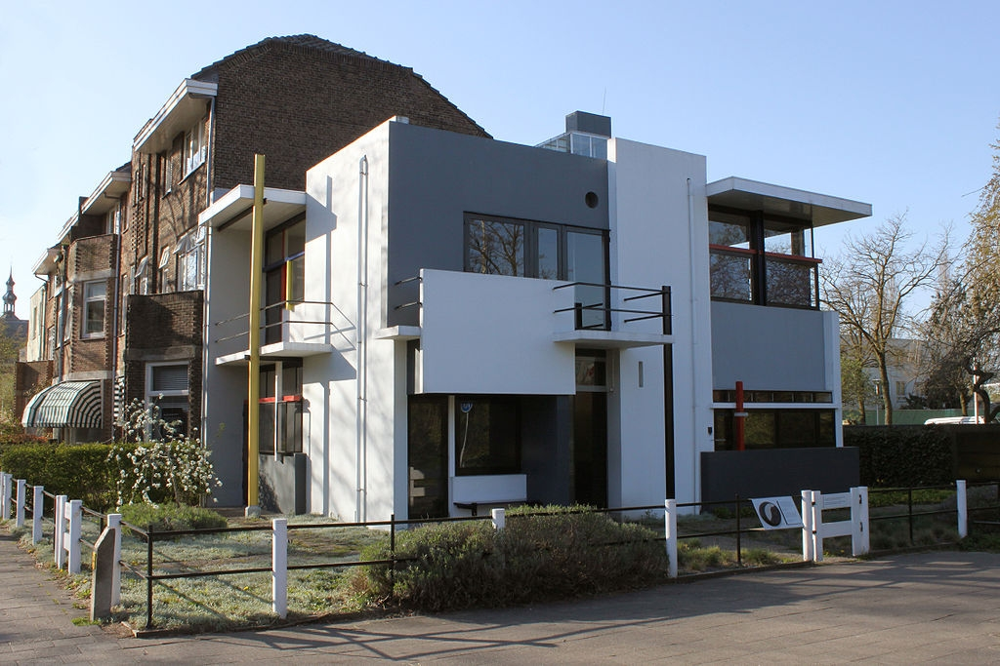
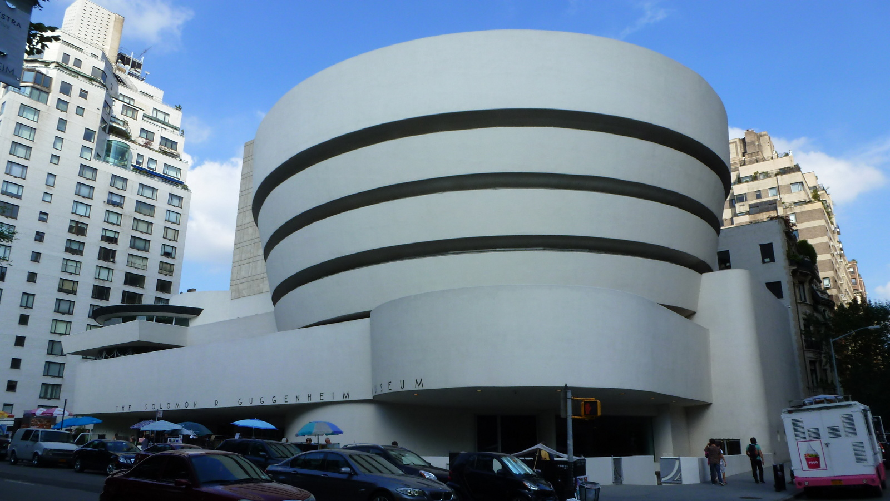
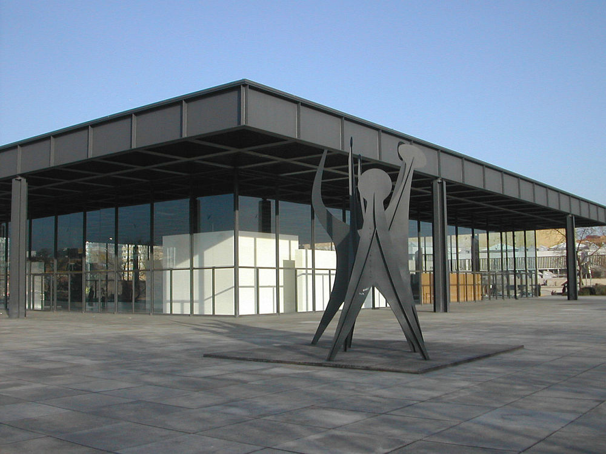

Modernizm rozwijał się w latach 1918-1975 i był początkiem zmian w urbanistyce światowej. Modernizm zakładał całkowite odejście od stylów historycznych. Architektura modernistyczna opierała się na nowej metodzie twórczej i naciskała na funkcjonalność. Architekci modernistyczni zakładali, że o pięknie budynku najbardziej stanowi jego funkcjonalność. Budynki miały przede wszystkim spełniać wymogi funkcji, jaką miał spełniać obiekt. Jednym z popularnych haseł modernizmu była maksyma Sullivana From follows function, co tłumaczy się na Forma wynika z funkcji lub Forma następuje po funkcji.
Opera w Sydney, J. Utzon.
Budynek traktowany był jako dzieło abstrakcyjne, a wszelkiego rodzaju ornamentyka odrzucana, ze względu na brak funkcjonalnego uzasadnienia. W obrębie modernizmu wyróżnić można kilkadziesiąt prądów, kierunków i szkół architektonicznych. Rozgraniczenie pomiędzy poszczególnymi prądami modernizmu jest niejasne.
Nazwa modernizm wywodzi się z francuskiego wyrazu moderne, oznaczającego nowoczesność, określa stosowny do współczesnych okoliczności sposób działania i formę bytu. Modernizm w architekturze nie jest tożsamy z wcześniejszym czasowo i skrajnie różnym ideowo modernizmem w sztuce i literaturze, któremu w architekturze odpowiada secesja. Natomiast w języku hiszpańskim zwykło się jako modernismo określać właśnie secesję w architekturze.
Hala Stulecia we Wrocławiu, M. Berg
Charakterystyczny był wolny plan budynku – uzyskanie dodatkowej powierzchni przez ograniczenie liczby ścian. Pozwoliło to na niemal dowolne kształtowanie przestrzeni każdej kondygnacji, a ich wnętrza mogły mieć różnorodny układ. Również ściany zewnętrzne nie musiały być zabudowane, np. na poziomie parteru. Elewacja, stanowiąca powierzchnię fasady, była prosta i pozbawiona dekoracji, mogła nawet w całości składać się ze szkła. Stosowano również tradycyjne, dobre jakościowo materiały, jak kamień i tynki szlachetne. Modernizm charakteryzowały także długie, pasmowe okna zajmujące dużą część elewacji. Wpuszczały do pomieszczeń naturalne światło i świeże powietrze oraz ułatwiały kontakt wnętrza z otoczeniem. Płaski dach mógł pełnić funkcję tarasu, ogrodu dachowego lub przestrzeni wspólnej dla mieszkańców.
Najpopularniejsi architekci modernizmu:
Chcesz dowiedzieć się więcej o modernizmie? Sprawdź Wikipedię, klikając tutaj.
Poznaj więcej budynków charakterystycznych dla modernizmu:
|
 Budynek Baugausu w Dessu-Rosslau, W. Gropius |
 Dworzec Warszawa Centralna, Arseniusz Romanowicz |
|
 Robie House, F. Lloyd Wright |
 Kaplica w Ronchamp, Le Corbusier |
|
 Dom własny Barbary i Stanisława Brukalskich |
 Dom pani Schröder-Schräder |
|
 Muzeum Guggenheima w Nowym Jorku, F. Lloyd Wright |
 Budynek projektu L. Mies van der Rohe |